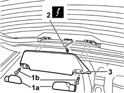

5550D16 THIRD STOP LIGHT - R+R
- Path
- Procedures > 55 ELECTRICAL EQUIPMENT > 5550 WARNING AND MANOEUVRING INDICATORS > 5550D BRAKE AND REVERSING LIGHTS > 5550D16 THIRD STOP LIGHT - R+R
- Kind
- repair procedure (removal / refitting; the operation number is the code)
- Applies to
- all engines; all production periods
- Interactive page
- https://sloeber94.github.io/elrnDB-aGt/en/#/125001697
Applies to: all engines; all production periods
 Removing
Removing
 Refitting
RefittingDisconnect the negative battery terminal lead.
Open the tailgate.
1. Remove the trims (1a) and undo the bolts (1b) underneath.
2. Disconnect the electrical connection for the third brake light.
Name | Connector | |
|---|---|---|
2 | Additional third brake light | See F40 ADDITIONAL TAIL-LIGHT ('THIRD BRAKE LIGHT') |
3. Recover the third brake light.

Applies to: all engines; all production periods
Refitting
RemovingCheck that the third brake light is not damaged.
Connect the electrical connection.
Name | Connector | |
|---|---|---|
- | Additional third brake light | See F40 ADDITIONAL TAIL-LIGHT ('THIRD BRAKE LIGHT') |
Position the third brake light and secure it using the fixing bolts.
Fit the bolt cover trims.
Close the tail-gate.
Connect the battery negative terminal lead.
Check the operation of the third brake light.